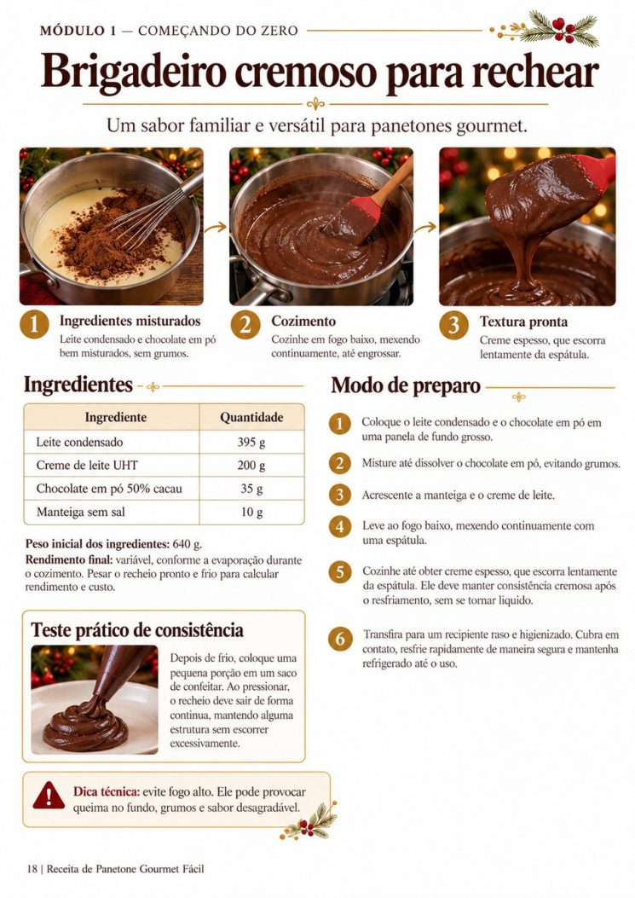
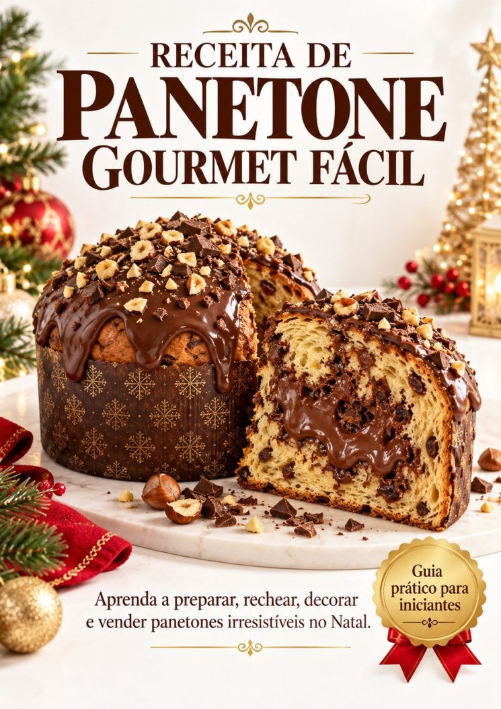
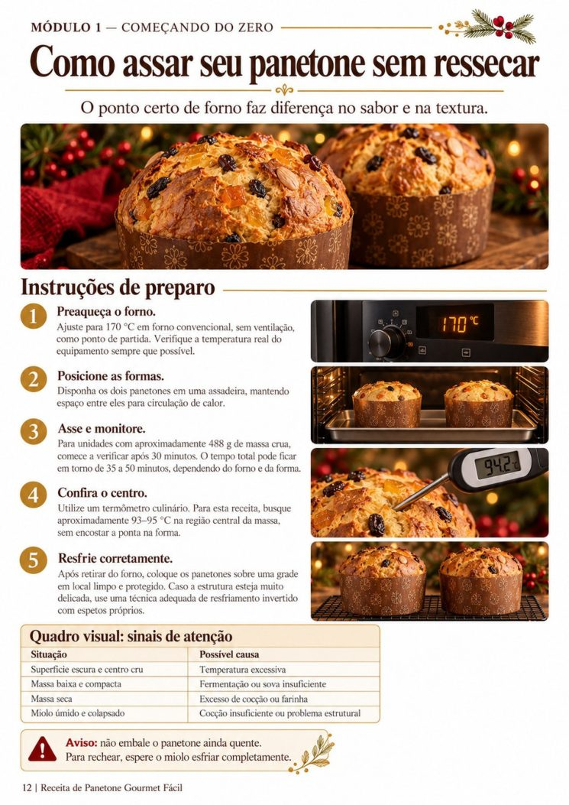
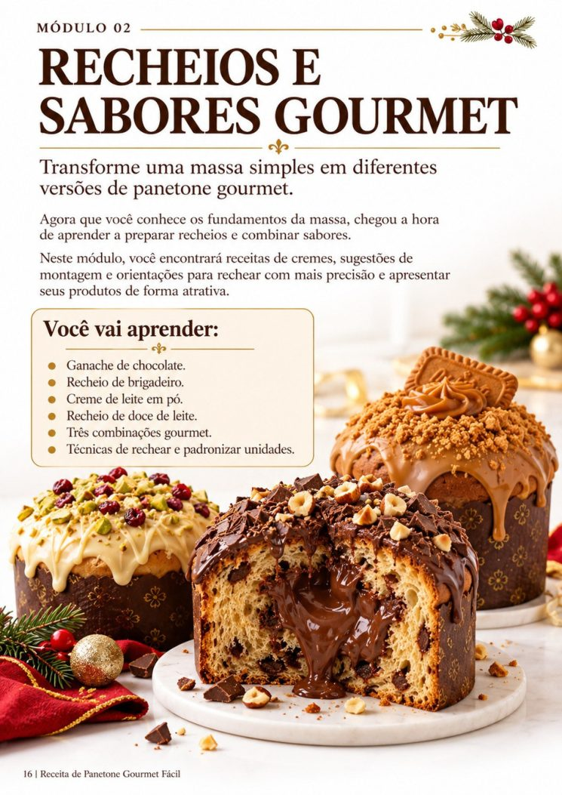

“Será que a massa está no ponto?”
Entenda ingredientes, fermentação, modelagem, temperatura e os erros mais comuns.
Da primeira massa aos primeiros pedidos


Aprenda a preparar massas macias, recheios cremosos e decorações caprichadas, mesmo começando do zero. Depois, organize os custos para vender com mais segurança.
Quando a receita ainda parece complicada
O guia organiza a jornada na ordem em que ela acontece na cozinha: preparar, rechear, finalizar e calcular.
Entenda ingredientes, fermentação, modelagem, temperatura e os erros mais comuns.
Aprenda cremes, combinações e uma montagem pensada para quem está começando.
Organize ingredientes e despesas para chegar a um preço de referência coerente.

Do ingrediente ao produto pronto
Receitas e explicações ilustradas apresentam os fundamentos da massa, os recheios, a finalização e a organização dos custos.
O conteúdo do guia
Uma sequência clara para consultar enquanto você coloca a mão na massa.
Ingredientes, equipamentos, organização, receita-base, fermentação, modelagem, forno, chocotone e correção de erros.
Ganache de chocolate, brigadeiro, creme de leite em pó, doce de leite, montagem e combinações.
Coberturas, decoração natalina, embalagens, etiquetas, conservação, transporte e checklists.
Custos, despesas por unidade, formação de preços, divulgação, encomendas e plano de produção.
Receitas presentes no material
Chocotone com brigadeiro e cobertura de chocolate.
Recheio branco cremoso com acabamento delicado.
Recheio de doce de leite com opção de castanhas.

Para começar do seu jeito
Receita de Panetone Gourmet Fácil
Você recebe o guia digital ilustrado e os três materiais complementares.
Garantia de 7 dias. As condições e o canal de solicitação devem ser apresentados no checkout antes do pagamento.
Pagamento único
R$ 14,90
A compra será habilitada quando o checkout seguro estiver configurado. Nenhum pedido é criado neste momento.
Antes de começar
Não. O guia foi pensado para iniciantes e explica os fundamentos da massa, as etapas de preparo e a montagem.
É um material digital em PDF. Não há entrega de um panetone físico.
O guia lista equipamentos simples e utensílios para começar, incluindo balança, formas e termômetro culinário.
Há um módulo com exemplos de custos, precificação, encomendas e divulgação. Os números são ilustrativos e não representam garantia de ganhos.
Sim, respeitando a legislação e os requisitos locais de manipulação, transporte, alergênicos, rotulagem e validade.
O pacote digital deve ser entregue pela plataforma escolhida após a confirmação do pagamento. O canal definitivo será informado no checkout.
A oferta prevê garantia de 7 dias. Os procedimentos, termos e canal de atendimento serão apresentados antes do pagamento.
Seu primeiro panetone gourmet pode começar com uma receita clara e uma cozinha organizada.
Rever a oferta